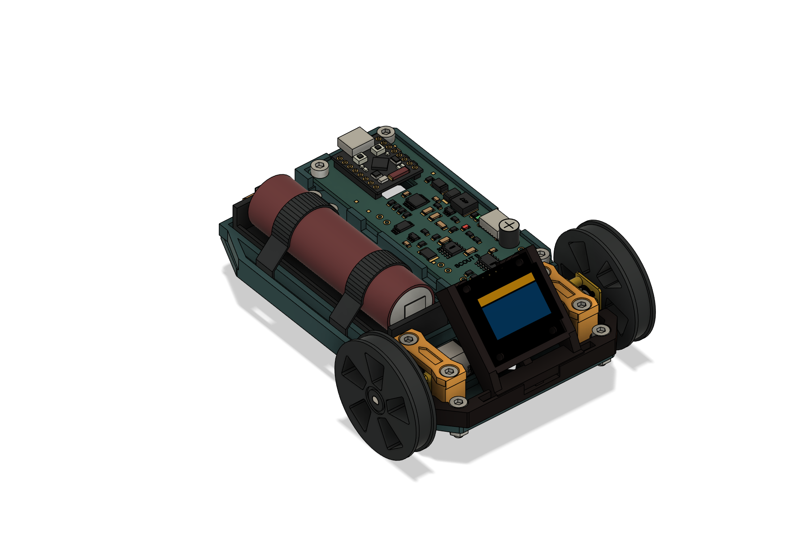
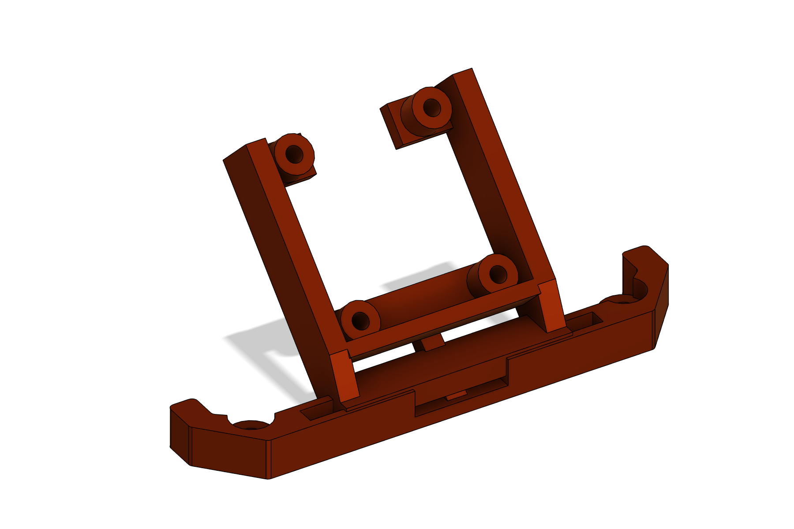
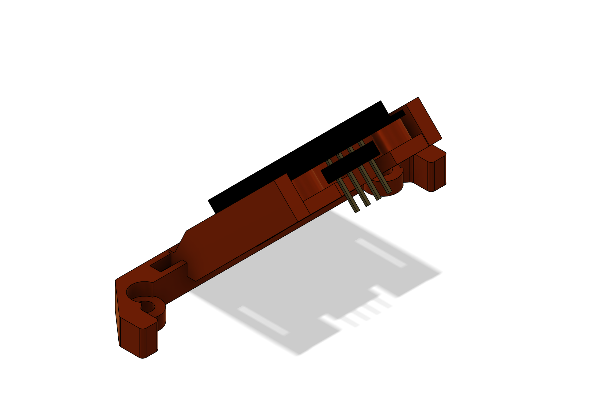
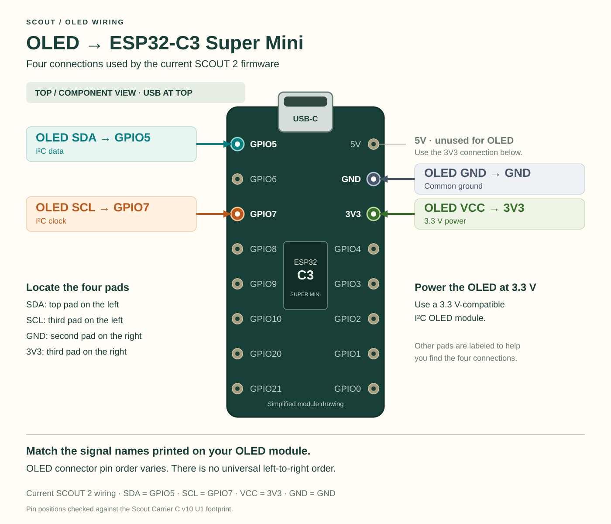

OLED replacement bumper
One printed part replaces the front bumper and holds the DIYmall 0.96-inch OLED at a 45° rearward lean. It reuses the two existing chassis mounting points.
Prototype — physical fit has not been tested. Confirm your actual OLED board against the dimensions below before printing. Review the slicer preview and check the printed assembly before use.

CAD verification reports one solid body and one connected lump, no feature errors, and no new overlaps against 11 nearby bodies. These checks do not establish physical fit.
Files
- Scout-OLED-Bumper-v1.stl — printable replacement bumper.
- Scout-OLED-Bumper-v1.f3d — editable part.
- Scout-OLED-Bumper-v1.step — neutral CAD part.
- Scout-OLED-Assembly-v1.f3d — placement in the Scout assembly.
Check the OLED
The mechanical reference is the fourth product photo on the DIYmall OLED listing, ASIN B01HEBIJKK. Check the supplied board and header; product revisions can differ.
| Feature | Drawing dimension |
|---|---|
| PCB outline | 27.3 ± 0.1 mm square |
| Mounting-hole center spacing | 20.7 ± 0.1 mm horizontal × 23.2 ± 0.1 mm vertical |
| Slotted mounting holes | 3.5 mm long × 2.2 mm high |
| PCB thickness | 1 mm |
| Header total depth | 11 mm; also allow room for the actual wire connectors |
Cradle design: 28.1 mm between the rails, four 2.4 mm M2 clearance holes, 6.5 mm support standoffs, and an open rear for the header. The original bumper mounting geometry is copied, including 56 mm hole spacing, 3.4 mm clearance holes and 6.2 mm counterbores.

Hardware
| Quantity | Item |
|---|---|
| 2 | Original M3 × 10 mm socket-cap screws and original M3 nuts |
| 4 | M2 × 12 mm screws and M2 nuts; nylon preferred. Screw-head outside diameter ≤ 3.8 mm preferred to clear the display glass. |
| Optional | Thin M2 washers, only where they clear the display glass and surrounding components |
Print and prepare
- Use PETG as a starting material, 0.2 mm layers and four walls. Place the flat bumper underside on the build plate.
- Inspect the slicer preview. Supports may be needed beneath the inclined cradle or local overhangs; make sure they can be removed without damaging the rails or standoffs.
- Remove supports and clean the clearance holes. Check that screws pass freely and the PCB rests on its supports without force.
Assemble
- Disconnect power and remove the battery. Remove the original front bumper and retain its two screws and nuts.
- Test the new bumper against the chassis. Align both mounting holes and start both original M3 screws into their nuts before tightening gently. Confirm the bumper seats fully.
- Place the OLED on the four standoffs, with the display facing outward and the header using the open rear escape. Check that only bare PCB mounting lands touch the supports.
- Fit four M2 × 12 mm screws and nuts. Check both sides for clearance, including screw ends and rear components. Add thin washers only if they remain completely clear of the glass. Tighten just enough to retain the board: never press on the glass or pull a bowed PCB flat with the screws.
- Route four wires rearward through the open cradle. Leave enough slack for service and retain the wires clear of both wheels, motors and screw access.
- Check the assembly by hand: bumper seated, display secure, no glass contact, no trapped wires, and wheels free to turn. Confirm the actual header connectors fit without forcing the PCB.

Wiring reference
Read the labels on the actual OLED. Follow the signal names below; do not assume the connector pin order matches a photo.
| OLED label | Scout reference connection |
|---|---|
| VCC | 3V3 |
| GND | GND |
| SCL | GPIO7 |
| SDA | GPIO5 |

This table records the intended connection reference. Confirm the actual Scout board labels and firmware pin assignment before reconnecting power.